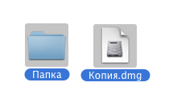
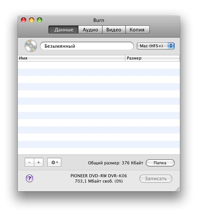
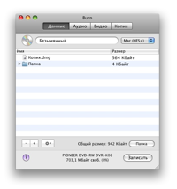
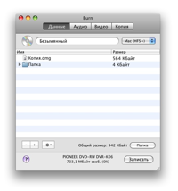

Запись дисков с данными:
Диск с данными — наиболее общий вид компьютерных дисков.
Существуют несколько их типов,
каждый со своим определенным назначением. Burn может создавать наиболее
распространенные диски.
1 Выберите несколько файлов
Это могут быть и папки.

2 Бросьте их в список
Бросьте выбранные файлы в список. Если хотите записать единственную
подготовленную папку, бросьте ее на закладку «Данные» над списком.
 

3 Выберите файловую систему
Выберите файловую систему:
Mac (HFS+):
Выберите эту файловую систему, если диск будет использоваться только
под Mac OS X. Windows не может читать эту файловую систему.
PC (Joliet):
Это наиболее распространенная файловая система для CD и может быть
прочитана на большинстве компьютеров. Можно использовать и на DVD.
DVD (UDF):
Это наиболее распространенная файловая система для DVD. Она может быть
прочитана на большинстве современных компьютеров (включая Mac OS 9 и
Windows 98). Можно использовать и на CD. (недоступно в Panther)
Mac + PC:
Комбинация файловых систем Mac + PC.
Она может быть прочитана практически на любом компьютере, но сохраняет
специфические данные Mac OS (такие как значки файлов и ветвь ресурсов).
Эксперт:
Комбинации перечисленных систем. Кроме того
ISO9660 (старая файловая система PC), HFS Standard (старая файловая
система Mac) и UDF
/ ISO 9660 для Panther.

4 Щелкните «Записать»
Откроется диалоговая панель.

5 Выберите параметры
Выберите параметры сессии. Дополнительные настройки можно найти в окне
«Настройки», доступном через меню Burn.

6 Запишите диск
Снова щелкните «Записать», чтобы начать процесс записи.

7 Burn
произведет запись диска
В процессе записи Burn будет показывать ее ход в информационной
панели.